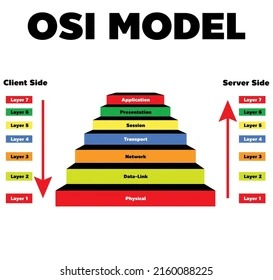

جود طاهر
الرقم: 1221381
المهارات: بايثون، أمن الشبكات، تطوير الويب
الهوايات: البرمجة، مسابقات الأمن السيبراني، كرة القدم
لبيبة شريعة
الرقم: 1220228
المهارات: جافا، إدارة قواعد البيانات، تصميم واجهات المستخدم
الهوايات: الرسم، القراءة، السباحة
ورود حمايل
الرقم: 1220357
المهارات: سي++، الخوارزميات، تعلم الآلة
الهوايات: الشطرنج، المشي لمسافات طويلة، التصوير
تنظم بروتوكولات شبكات الحاسوب في طبقات لإدارة التعقيد وتوفير النمطية.
